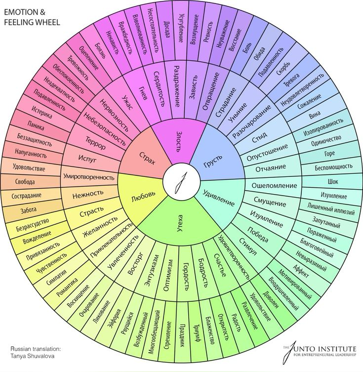

Колесо чувств
Junto Institute, по методу Глории Уилкокс
Шесть базовых чувств в центре — точка входа. От каждого расходятся два кольца ко всё более конкретным оттенкам: от «грусть» через «опустошённость» к «беспомощности».
центр — базовое чувство
2 кольцо — оттенок
3 кольцо — конкретика